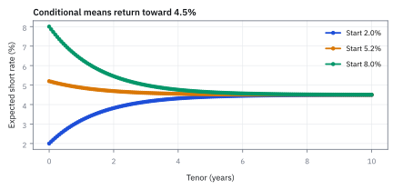
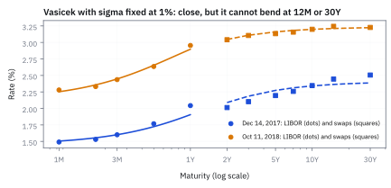

20.5 Calibrating Vasicek and Cox-Ingersoll-Ross (CIR)
เลือกพารามิเตอร์สี่ตัวของ Vasicek หรือ CIR ให้ LIBOR และ swap rate ที่แบบจำลองคำนวณได้ใกล้ quote ของตลาดที่สุด แล้วยอมรับว่า curve บอกระดับและความเร็วดึงกลับได้ แต่แทบบอกความผันผวนไม่ได้
ทีมให้ Vasicek fit กับ LIBOR ห้าอายุและ swap rate เจ็ดอายุของตลาดดอลลาร์วันที่ 14 ธันวาคม 2017 โดยปล่อยพารามิเตอร์ทั้งสี่ตัวอิสระ optimizer ตอบว่าความผันผวนของ short rate คือ $\sigma_V=9.52\%$ ต่อปี ทั้งที่ short rate วันนั้นอยู่แถว 1.45% เพื่อนบอกว่าตลาดกำลังบอกว่าอัตราจะแกว่งแรง ควรขาย cap แพงขึ้น ถูกไหม?
ลองตอบก่อนเปิดเฉลย
ไม่ถูก curve แทบไม่รู้จัก $\sigma_V$ ลองตรึง $\sigma_V$ ไว้ที่ 0, 1% และ 2% แล้ว fit อีกสามตัวใหม่ คะแนนความคลาด (SSRE) ได้ 0.013680, 0.013671 และ 0.013643 ต่างกันไม่ถึง 0.3% ตรึงที่ 13% ยังได้ 0.013672 เท่ากับที่ 1% ส่วน 9.52% ได้ 0.012667 ดีขึ้นแค่ 7.3% optimizer ใช้ $\sigma_V$ เป็นปุ่มดัด curve อีกหนึ่งปุ่ม ไม่ได้อ่านข่าวเรื่องความผันผวนจากตลาด ความผันผวนต้องหาจากราคา option เช่นcap และ swaption บนต้นไม้
ภาพรวมก่อนลงสูตร
Vasicek และ CIR เป็นแบบจำลองของ short rate ที่มีสูตรปิดของราคาพันธบัตร เมื่อมีราคาพันธบัตรทุกอายุ ก็แปลงเป็น LIBOR และ swap rate ของแบบจำลองได้ แต่แบบจำลองมีปุ่มแค่สี่ปุ่ม คือ ความเร็วดึงกลับ $\kappa$ ระดับยาว $\theta$ ความผันผวน $\sigma$ และ short rate วันนี้ $r_0$ ขณะที่ตลาดให้ quote มา 12 ตัว ปุ่มสี่ปุ่มดัด curve ให้ผ่าน 12 จุดพร้อมกันไม่ได้ calibration จึงเป็นการเลือกปุ่มที่ทำให้ “พลาดน้อยที่สุด” ตามกติกาที่เราประกาศ
ต่างจากต้นไม้ Ho–Lee และ BDT ที่ปรับระดับได้ทุกชั้น จึง fit curve ได้พอดีทุกจุด แบบจำลองพารามิเตอร์น้อยแลกความพอดีกับความง่าย มันยังนิยมในงานที่ระดับของอัตราสำคัญกว่ารูปร่างของ curve
หน้านี้จะดูว่าแต่ละปุ่มทำอะไร สร้างสูตรราคาพันธบัตร เลือก objective ทดสอบระบบด้วย curve ที่รู้คำตอบ calibrate กับข้อมูลจริงสองวัน แล้วพิสูจน์ด้วยตัวเลขว่าทำไมปุ่ม $\sigma$ จึงเชื่อไม่ได้ รูปด้านล่างคือผลลัพธ์ปลายทางของวันที่ 14 ธันวาคม 2017: จุดของตลาด เส้นของแบบจำลอง และเส้นแดงที่เหลือเป็นความคลาด
รูป — quote 12 ตัวของตลาดกับสิ่งที่ Vasicek ดีที่สุดทำได้
ศัพท์ที่ใช้ในหัวข้อนี้
- Vasicek และ CIR
- แบบจำลอง short rate ที่ดึงอัตรากลับหาระดับยาวด้วยความเร็วคงที่ Vasicek มีแรงสุ่มขนาดคงที่ อัตราจึงติดลบได้ CIR คูณแรงสุ่มด้วย $\sqrt r$ แรงสุ่มจึงหายไปเมื่ออัตราเข้าใกล้ศูนย์ ทั้งคู่ให้สูตรปิดของราคาพันธบัตร ใช้เมื่อต้องการแบบจำลองที่เร็วและพารามิเตอร์น้อย
- Calibration
- การหมุนพารามิเตอร์ของแบบจำลองจนราคาของแบบจำลองเข้ากับราคาตลาดตามกติกาที่ประกาศไว้ ทำใหม่ทุกวันหรือหลายครั้งต่อวัน ก่อนเอาแบบจำลองไปตั้งราคาของที่ตลาดไม่มี quote
- Residual และ objective
- residual คือค่าของแบบจำลองลบค่าตลาดของ quote หนึ่งตัว objective คือผลรวมกำลังสองของ residual ที่ถ่วงน้ำหนักแล้ว ซึ่ง optimizer ทำให้ต่ำที่สุด หน่วยของ residual (ราคา, bp หรือสัดส่วน) เปลี่ยนคำตอบได้
- SSRE
- sum of squared relative errors คือผลรวมกำลังสองของความคลาดแบบสัดส่วน (ค่าแบบจำลองหารด้วยค่าตลาดลบหนึ่ง) ใช้ให้ quote ระดับ 1.5% กับ 3% ที่พลาดเป็นสัดส่วนเท่ากันได้คะแนนเท่ากัน
- Identifiability
- ข้อมูลแยกพารามิเตอร์ชุดหนึ่งออกจากอีกชุดได้แค่ไหน ถ้าหลายชุดให้คะแนนเกือบเท่ากัน ค่าที่ optimizer ตอบเป็นแค่หนึ่งในหลายคำตอบ ไม่ใช่ข้อมูลจากตลาด
- Feller condition
- เงื่อนไข $2\kappa\theta\ge\sigma_C^2$ ของ CIR ที่ทำให้อัตราไม่แตะศูนย์ ใช้ตรวจว่าชุดพารามิเตอร์ที่ fit ได้สมเหตุสมผล
สัญลักษณ์และหน่วย
| สัญลักษณ์ | ความหมาย | หน่วย |
|---|---|---|
| $r_t,\ r_0$ | short rate และค่าวันนี้ | ต่อปี |
| $\kappa,\ \theta$ | ความเร็วดึงกลับ และระดับยาว (ใต้ $\mathbb Q$) | ต่อปี, ต่อปี |
| $\sigma_V,\ \sigma_C$ | ความผันผวนของ Vasicek และตัวคูณ $\sqrt r$ ของ CIR | ต่อ √ปี, √(ต่อปี) ต่อ √ปี |
| $P(0,T),\ A,\ B$ | ราคาพันธบัตร $=Ae^{-Br_0}$ และสองฟังก์ชันของอายุ | \$ ต่อ \$1, ไม่มีหน่วย, ปี |
| $y(T)$ | zero yield ทบต่อเนื่อง $=-\ln P(0,T)/T$ | ต่อปี |
| $L(T),\ s(T)$ | LIBOR แบบ simple และ swap rate ครึ่งปี ที่คำนวณจากราคาของแบบจำลอง | ต่อปี |
| $J,\ \mathrm{SSRE}$ | objective ใน bp กำลังสอง และผลรวมกำลังสองของความคลาดแบบสัดส่วน | bp², ไม่มีหน่วย |
ขั้นที่ 1 — สองแบบจำลอง และปุ่มแต่ละปุ่มทำอะไร
ก่อน calibrate ต้องรู้ว่ากำลังหมุนปุ่มอะไร สองสมการแรกคือนิยามของแบบจำลอง ซึ่งหน้าการแก้ SDE ของ Vasicek และ CIR แก้ไว้แล้ว ผลที่ใช้คือค่าเฉลี่ยเดินเข้าหา $\theta$ แบบ exponential และ variance ตันที่เพดาน ใส่ตัวเลขของ curve สังเคราะห์ที่หน้านี้ใช้ทดสอบ: $\kappa=0.65$ $\theta=4.5\%$ $\sigma_V=1.2\%$ $r_0=5.2\%$
$\kappa$ บอกว่าดึงกลับเร็วแค่ไหน $\theta$ บอกว่าดึงไปหาอะไร $\sigma$ บอกว่าแกว่งแค่ไหน และ $r_0$ คือจุดเริ่ม ระยะห่าง 0.7 จุดจาก 5.2% หายครึ่งหนึ่งใน 1.0664 ปี ไม่ใช่ $1/\kappa=1.5385$ ปี ซึ่งคือเวลาที่ระยะห่างเหลือ $1/e$ หรือ 36.8% แถวสุดท้ายคือ SD ระยะยาว: แรงดึงกลับหยุดการกระจายไว้ที่ 1.0525%
ทั้งหมดนี้อยู่ใต้ $\mathbb Q$ ของการตั้งราคา ค่าที่ fit จากราคาตลาดจึงรวมค่าชดเชยความเสี่ยงไว้แล้ว ไม่ใช่คำทำนายว่าอัตราจริงจะเดินอย่างไร
รูป — ค่าเฉลี่ยของ short rate เดินกลับหา 4.5%

ขั้นที่ 2 — สูตรราคาพันธบัตร: เดารูปแล้วแทนลง PDE
calibrate ต้องคิดราคาพันธบัตรหลายพันครั้ง จึงต้องมีสูตรปิด ราคาคือ $P(0,T)=\mathbb E^{\mathbb Q}\big[e^{-\int_0^Tr_s\,ds}\big]$ และFeynman–Kac เปลี่ยนค่าเฉลี่ยนี้เป็น PDE ของราคา $f(\tau,r)$ ที่เหลืออายุ $\tau$ ลองรูป $f=e^{a(\tau)-B(\tau)r}$ ซึ่งเป็นจริงที่วันครบกำหนดถ้า $a(0)=B(0)=0$ แทนลง PDE หารด้วย $f$ แล้วแยกพจน์ที่คูณ $r$ ออกจากพจน์ที่ไม่มี $r$
สมการต้องเป็นจริงทุกค่า $r$ สัมประสิทธิ์หน้า $r$ จึงต้องเป็นศูนย์เอง และพจน์ที่ไม่มี $r$ ก็ต้องเป็นศูนย์เอง ได้สมการธรรมดาสองตัว สมการของ $B$ เป็นเชิงเส้นอันดับหนึ่ง คูณ $e^{\kappa\tau}$ แล้วอินทิเกรตจาก 0 ได้แถวสุดท้าย $B$ คือความไวของ log ราคาต่อ $r$ และตันที่ $1/\kappa$ ไม่โตตามอายุ
อินทิเกรต $a'$ ได้ $\ln A=(\theta-\tfrac{\sigma_V^2}{2\kappa^2})(B-\tau)-\tfrac{\sigma_V^2B^2}{4\kappa}$ ตรวจได้ด้วยการดิฟกลับ ของ CIR แรงสุ่มกำลังสองคือ $\sigma_C^2r$ ซึ่งมี $r$ อยู่ด้วย พจน์ $\tfrac12\sigma_C^2B^2$ จึงย้ายไปอยู่ในสมการของ $B$: $B'=1-\kappa B-\tfrac12\sigma_C^2B^2$ และ $a'=-\kappa\theta B$ คำตอบคือ $B_C=2(e^{\gamma\tau}-1)/[(\gamma+\kappa)(e^{\gamma\tau}-1)+2\gamma]$ และ $\ln A_C=\tfrac{2\kappa\theta}{\sigma_C^2}\ln\big(2\gamma e^{(\kappa+\gamma)\tau/2}/[(\gamma+\kappa)(e^{\gamma\tau}-1)+2\gamma]\big)$ เมื่อ $\gamma=\sqrt{\kappa^2+2\sigma_C^2}$ บางตำราเขียนด้วย $\cosh$ และ $\sinh$ ของ $\gamma\tau/2$ ซึ่งเป็นสูตรเดียวกันหลังคูณเศษและส่วนด้วย $2\gamma e^{\gamma\tau/2}$
รูป — curve ที่ Vasicek วาดได้ ขึ้นกับว่า $r_0$ อยู่เหนือหรือใต้ $\theta$
ขั้นที่ 3 — ราคาพันธบัตรแกว่งแค่ไหน: $\sigma_VB$
สูตรปิดบอกราคาวันนี้ ถ้าจะ hedge ต้องรู้ว่าราคาแกว่งแค่ไหน ใช้ Itô กับ $P(t,r_t)$ แล้วให้ PDE ของขั้นก่อนทำงาน: พจน์ $dt$ ทั้งก้อนคือด้านซ้ายของ PDE ซึ่งเท่ากับ $rP$ พอดี และ $P_r=-BP$
ใต้ $\mathbb Q$ พันธบัตรทุกอายุโตเฉลี่ยด้วย $r_t$ เท่ากัน ต่างกันแค่ความผันผวน $\sigma_VB$ พันธบัตรยาวแกว่งมากกว่า แต่ $B$ ตันที่ $1/\kappa=1.5385$ ความผันผวนจึงไม่เกิน 1.85% ต่อปีไม่ว่าอายุจะยาวแค่ไหน ต่างจาก duration ของ zero ที่เท่ากับอายุและโตไม่หยุด เพราะแรงดึงกลับทำให้ shock วันนี้จางก่อนถึงเงินก้อนไกล รูปด้านล่างวาดสองแบบเทียบกัน
รูป — ความผันผวนของราคาพันธบัตรตันเพราะแรงดึงกลับ
ขั้นที่ 4 — objective: “ใกล้” วัดด้วยอะไร
calibration ไม่ใช่การมองกราฟแล้วเดา มันมีห้าการตัดสินใจ: เลือกข้อมูล เลือกแบบจำลอง เลือก objective เลือกจุดเริ่ม แล้วเลือก optimizer การเลือก objective สำคัญที่สุด เพราะมันคือคำถามที่ optimizer ตอบ เขียนราคาตลาดของตราสารที่ $i$ ว่า $V_i$ ราคาของแบบจำลองที่พารามิเตอร์ $\Theta$ ว่า $\hat V_i$ แล้วเลือกว่าจะลงโทษความคลาดแบบไหน
สามแถวล่างให้คะแนน residual สามชุดเป็น bp ของ yield น้ำหนักเท่ากัน ยกกำลังสองทำให้เครื่องหมายต่างกันไม่หักล้างกัน ชุดที่สองดีกว่าชุดแรก แต่ชุดที่สามซึ่งตรงพอดีสองจุดกลับแย่ที่สุด เพราะจุดเดียวที่พลาด 4 bp ได้โทษ 16 optimizer จึงยอมพลาดนิดหน่อยหลายจุดดีกว่าพลาดมากจุดเดียว
รูปของ $H$ เปลี่ยนคำตอบ: วัดเป็นราคา ($H_{\rm abs}$) พันธบัตรยาวที่ราคาแกว่งเป็นดอลลาร์มากจะครองคะแนน วัดเป็นสัดส่วน ($H_{\rm rel}$) quote ต่ำและสูงได้น้ำหนักเท่ากัน $w_i$ ใช้ถ่วงตามความน่าเชื่อถือของ quote เช่นตัวที่ bid–ask แคบได้น้ำหนักมาก ต้องบันทึกกติกานี้คู่กับพารามิเตอร์เสมอ
นับจำนวนด้วย: ถ้าจำนวน quote เท่ากับจำนวนพารามิเตอร์ (หนึ่งราคา option หาหนึ่ง implied volatility) แก้ได้พอดี ถ้า quote มากกว่า (12 ต่อ 4 ในหน้านี้) จะไม่มีชุดไหนผ่านทุกจุด และถ้าพารามิเตอร์มากกว่า quote จะมีหลายชุดที่ผ่านทุกจุดพอดี ซึ่งก็แยกไม่ออกว่าชุดไหนถูก
ขั้นที่ 5 — ทดสอบระบบด้วย curve ที่รู้คำตอบ
โจทย์ให้อะไรมาบ้าง: สร้าง yield ห้าอายุ 0.5, 1, 2, 5 และ 10 ปีจาก Vasicek ที่ $\kappa=0.65$ $\theta=4.5\%$ $\sigma_V=1.2\%$ $r_0=5.2\%$ ได้ 5.097160, 5.013204, 4.887677, 4.697454 และ 4.594414% แล้วให้ optimizer (Levenberg–Marquardt) เริ่มจาก $\kappa=0.4$ $\theta=4\%$ $\sigma_V=2\%$ โดยไม่บอกคำตอบ ตรึง $r_0=5.2\%$ ใช้ objective เป็น bp ของ yield
คำตอบ: optimizer คืนค่าที่ใช้สร้าง curve ทุกหลัก ท่อทั้งหมดจึงถูก ทั้งสูตรราคา การแปลงเป็น yield และ objective แต่แถวสุดท้ายเตือนไว้ก่อน ถ้าบังคับ $\sigma_V=0$ แล้ว fit อีกสองตัวใหม่ ได้ $\kappa=0.6369$ $\theta=4.4816\%$ และ yield ยังคลาดเฉลี่ยแค่ 0.0275 bp ซึ่งเล็กกว่าเศษที่ตลาดปัดทิ้ง ข้อมูลที่คลาดแค่นิดเดียวก็แยก $\sigma_V=0$ ออกจาก 1.2% ไม่ได้แล้ว การคืนค่าได้จึงพิสูจน์ว่าโค้ดถูก ไม่ได้พิสูจน์ว่าข้อมูลบอก $\sigma$
ตรวจเองใน 10 วินาที: แถวแรกคือ $-\ln A+Br_0$ ที่ $T=1$: $0.735314(0.052)=0.038236$ บวก $0.011896$ ได้ 0.050132
ขั้นที่ 6 — CIR บน curve เดียวกัน: จุดเริ่มสำคัญกว่าที่คิด
fit CIR กับ curve สังเคราะห์เดียวกัน ถ้าเริ่ม $\sigma_C$ ไกลเกินไป optimizer ไหลไปหา $\sigma_C$ เกือบศูนย์ ($0.002887$) แล้วค้าง ได้ชุดที่คลาดเฉลี่ย 0.0275 bp ซึ่งก็คือคำตอบแบบไม่มีความผันผวนของขั้นก่อนนั่นเอง objective เป็นหุบยาว optimizer ที่เดินตามความชันอย่าง gradient descent หรือ BFGS จึงหยุดที่ใดก็ได้บนพื้นหุบ (จุดต่ำสุดเฉพาะที่) จุดเริ่มที่มีเหตุผลคือ $\sigma_C$ ที่ทำให้แรงสุ่มที่ $r_0$ เท่ากับของ Vasicek
เริ่มจากจุดนี้ CIR fit curve ได้เหลือ residual เฉลี่ยราว 0.00005 bp ดีกว่าชุดที่ค้างราว 600 เท่า แรงสุ่มที่ $r_0$ คือ $0.049339\sqrt{0.052}=1.125\%$ ใกล้ 1.2% ของ Vasicek ที่สร้าง curve ส่วนชุดที่ค้างให้แค่ 0.066%
Feller: $2\kappa\theta=0.058116$ มากกว่า $\sigma_C^2=0.002434$ ราว 24 เท่า อัตราไม่แตะศูนย์ ชุดที่ค้างก็ “ผ่าน” Feller เหมือนกัน แต่ผ่านเพราะแทบไม่มีความผันผวน การผ่านจึงไม่มีความหมาย
วิธีกันค้างมีสามแบบ: ค้นแบบตาราง (grid search) ซึ่งหาจุดต่ำสุดจริงได้แน่แต่แพงขึ้นแบบทวีคูณตามจำนวนพารามิเตอร์ Nelder–Mead ซึ่งใช้แค่ค่าของ objective ไม่ต้องใช้อนุพันธ์ และวิธีที่ใช้ความชันซึ่งเร็วเมื่อ objective เรียบ ไม่มีวิธีไหนรับประกันจุดต่ำสุดจริง จึงเริ่มหลายจุดแล้วเก็บตัวที่ดีที่สุด และไล่ดู objective บนเส้นตรง $\Theta=\alpha\Theta_1+(1-\alpha)\Theta_2$ ระหว่างสองคำตอบ ถ้าระหว่างทางมีเนินกั้น แปลว่ามีหลายหุบ ดูoptimizer หลายตัวแปรสำหรับ calibrationสำหรับรายละเอียด
รูป — แรงสุ่มของ CIR หดเมื่ออัตราเข้าใกล้ศูนย์
ขั้นที่ 7 — ข้อมูลจริง: แปลงราคาพันธบัตรของแบบจำลองเป็น LIBOR และ swap rate
ตลาดไม่ได้ quote zero yield ตรง ๆ มี LIBOR ช่วงสั้นกับ swap rate ช่วงยาว (ตารางข้างล่าง) จึงต้องแปลงราคาพันธบัตรของแบบจำลองให้เป็นภาษาเดียวกับ quote ก่อนเทียบ LIBOR ใช้ดอกเบี้ยแบบ simple ที่ทำให้ \$1 วันนี้โตเป็น $1/P(0,T)$ (ดูzero rate และ bootstrapping) swap rate คืออัตราคงที่ที่ทำให้ขาคงที่เท่าขาลอยตัว $1-P(0,T)$ (ดูswap rate และ swap curve) กับงวดครึ่งปี แล้ววัดความคลาดแบบสัดส่วน
ความคลาดแบบสัดส่วนทำให้ LIBOR 1.5% ที่พลาด 0.015 จุด กับ swap 3% ที่พลาด 0.03 จุด นับเป็นพลาด 1% เท่ากัน ข้อมูลมี 12 quote แต่แบบจำลองมีพารามิเตอร์ 4 ตัว จึงไม่มีชุดไหนผ่านทุกจุด ต้องหาชุดที่ SSRE ต่ำสุด ตัวอย่างนี้ใช้สัดส่วนปี $T$ ตรง ๆ ของจริง LIBOR นับวันแบบ actual/360 คือจำนวนวันจริงหารด้วย 360 ตามธรรมเนียมตลาดเงินดอลลาร์
LIBOR และ swap rate ของตลาดดอลลาร์สองวัน (%)
| ตราสาร | อายุ | 14 ธันวาคม 2017 | 11 ตุลาคม 2018 |
|---|---|---|---|
| LIBOR | 1 เดือน | 1.49078 | 2.27950 |
| LIBOR | 2 เดือน | 1.52997 | 2.33075 |
| LIBOR | 3 เดือน | 1.60042 | 2.43631 |
| LIBOR | 6 เดือน | 1.76769 | 2.63525 |
| LIBOR | 12 เดือน | 2.04263 | 2.95425 |
| swap | 2 ปี | 2.0130 | 3.0408 |
| swap | 3 ปี | 2.1025 | 3.1054 |
| swap | 5 ปี | 2.1950 | 3.1332 |
| swap | 7 ปี | 2.2585 | 3.1562 |
| swap | 10 ปี | 2.3457 | 3.1990 |
| swap | 15 ปี | 2.4447 | 3.2437 |
| swap | 30 ปี | 2.5055 | 3.2270 |
ในสิบเดือนระหว่างสองวัน อัตราทั้งเส้นขึ้นราว 0.7 ถึง 1 จุด ปี 2017 เส้นชันต่อไปถึง 30 ปี ปี 2018 แบนตั้งแต่ราว 5 ปีขึ้นไป และ swap 30 ปีต่ำกว่า 15 ปีเล็กน้อย
ขั้นที่ 8 — Vasicek บนสองวัน เมื่อตรึง $\sigma_V=1\%$
โจทย์ให้อะไรมาบ้าง: ตรึง $\sigma_V=1\%$ ไว้ก่อน (เหตุผลอยู่ในขั้นถัดไป) ให้ optimizer หา $\kappa,\theta,r_0$ ที่ทำให้ SSRE ต่ำสุด เริ่มสามจุด ($\kappa$ = 0.3, 1.5 และ 5) แล้วเก็บจุดที่ดีที่สุด เพราะ objective อาจมีจุดต่ำสุดเฉพาะที่หลายจุด
คำตอบ: ปี 2018 fit ดีกว่าราว 14 เท่า ทุก quote คลาดไม่เกิน 2% เพราะเส้นแบนตั้งแต่ 5 ปี ซึ่งเป็นรูปที่ Vasicek วาดได้ ปี 2017 เส้นชันถึง 30 ปี แบบจำลองต้องใช้ $\kappa$ สูงให้ช่วงสั้นโค้งตาม ปลายยาวจึงแบนเร็วเกิน: LIBOR 12 เดือนต่ำไป 6.73% (1.9053% เทียบ 2.04263%) swap 30 ปีต่ำไป 4.77% และ swap 2 ถึง 7 ปีสูงไป 2.4 ถึง 3.9% ตามรูปภาพรวมด้านบน half-life ของสองวันคือ $0.693147/1.3806=0.50$ ปี และ $0.693147/2.8194=0.25$ ปี
ตรวจเองใน 10 วินาที: ราคาพันธบัตร 30 ปีปี 2018 (0.3824) ต่ำกว่าปี 2017 (0.4896) เพราะอัตราทั้งเส้นขึ้น ถ้าอัตราเฉลี่ย 30 ปีเป็นราว 2.4% และ 3.2% จะได้ $e^{-0.72}=0.487$ และ $e^{-0.96}=0.383$ ใกล้กัน
รูป — Vasicek บนข้อมูลจริงสองวัน

ขั้นที่ 9 — curve บอก $\sigma$ ไม่ได้: ตรึงทีละค่าแล้วดู SSRE
ทำไมต้องตรึง $\sigma_V$? ทดลองตรง ๆ: ตรึง $\sigma_V$ หลายค่า แล้ว fit อีกสามตัวใหม่ทุกครั้งบนข้อมูลปี 2017 ถ้า SSRE แทบไม่เปลี่ยน แปลว่าข้อมูลชุดนี้ไม่รู้จัก $\sigma_V$ แล้วลองปล่อย $\sigma_V$ อิสระ ซึ่งคือโจทย์เปิดหน้า
จาก 0 ถึง 2% ซึ่งเป็นช่วงที่อัตราจริงแกว่ง SSRE ขยับแค่ 0.27% เพราะ $\kappa$ และ $\theta$ ปรับชดเชย และ 13% ได้คะแนนเท่ากับ 1% แทบทุกหลัก ปล่อยอิสระได้ $\sigma_V=9.52\%$ ($\kappa=0.9475$ $\theta=2.918\%$) ลด SSRE ได้แค่ 7.3%
optimizer ใช้พจน์ความโค้ง $\sigma_V^2B^2$ ใน $\ln A$ ช่วยดัดปลายยาวที่แบนเกินไป ไม่ได้อ่านความผันผวนจากตลาด ถ้าเชื่อค่านี้ อัตราระยะยาวมี SD $0.0952/\sqrt{2(0.9475)}=6.92\%$ รอบระดับ 2.92% ซึ่งติดลบบ่อย ขัดกับตลาดที่เห็น
CIR ก็เหมือนกัน ตรึง $\sigma_C=0.05$ (ที่ $r=2.4\%$ คือแกว่งราว 0.77% ต่อปี) ได้ SSRE 0.013679 และ 0.000948 และราคาพันธบัตร 30 ปี 0.4896 และ 0.3824 เท่ากับ Vasicek กราฟของสองแบบจำลองบนข้อมูลนี้จึงทับกันสนิท บนต้นไม้ BDT ก็เจอเรื่องเดียวกัน ต้นไม้สองต้นที่ fit ราคา zero ชุดเดียวกันพอดี แต่ใช้พารามิเตอร์ความผันผวน 0.005 กับ 0.01 ให้ราคา swaption \$1,339 กับ \$1,962 (swaption บนต้นไม้) ความผันผวนต้องเอามาจากราคา option เช่น caplet หรือ swaption
รูป — คะแนนความคลาดเมื่อตรึงความผันผวนทีละค่า
ความผิดที่ให้คำตอบผิดแบบเงียบ ๆ
เชื่อ $\sigma$ ที่ fit จาก curve: ปี 2017 ได้ 9.52% ต่อปี แต่ SSRE ต่างจาก $\sigma_V=1\%$ แค่ 7.3% และ 13% ได้คะแนนเท่ากับ 1% ถ้าใช้ค่านี้ตั้งราคา cap จะได้ราคาที่ไม่มีข้อมูลตลาดรองรับเลย
ปล่อย optimizer ค้างแล้วรายงาน: CIR ชุด $\sigma_C=0.002887$ คลาด 0.0275 bp ดูดีพอ แต่ชุดที่ดีที่สุดคลาดแค่ 0.00005 bp เริ่มหลายจุดและดู residual ทุกตัวเสมอ
เทียบคนละกติกาอัตรา: yield ทบต่อเนื่องของแบบจำลองปี 2017 ที่ 12 เดือนคือ 1.8873% แต่ LIBOR ของแบบจำลองแบบ simple คือ 1.9053% ถ้าเอา yield ไปเทียบกับ LIBOR ตรง ๆ จะคลาดเพิ่ม 1.8 bp และความคลาดแบบสัดส่วนกลายเป็น −7.60% แทน −6.73%
อ่าน $1/\kappa$ เป็น half-life: ที่ $\kappa=0.65$ ได้ 1.54 ปี แต่ระยะห่างหายครึ่งหนึ่งใน 1.07 ปี
เรียก curve ผิดชื่อ: fit กับ yield พันธบัตรรัฐบาลแล้วเรียกว่า curve คิดลดของ SOFR ทั้งสองมีเนื้อหาต่างกัน (สภาพคล่องและความต้องการพันธบัตรรัฐบาล) ต้องประกาศว่าใช้ curve ไหน
ใช้ข้อมูลย้อนหลังของอัตราแทนราคาตลาด: การประมาณ $\kappa$ และ $\theta$ จากเส้นทางอัตราในอดีตได้ค่าใต้โอกาสจริง ไม่ใช่ใต้ $\mathbb Q$ สองชุดต่างกันด้วยค่าชดเชยความเสี่ยง ใช้แทนกันตรง ๆ แล้วราคาพันธบัตรจะไม่ตรงตลาด
ใช้ทำอะไรบนโต๊ะจริง
ทุกเช้าโต๊ะดึง quote ชุดเดียวกับที่สร้าง curve แปลงเป็นราคา fit พารามิเตอร์จากหลายจุดเริ่ม ดู residual ทีละ quote และเก็บประวัติพารามิเตอร์ไว้ดูการกระโดด ถ้าแบบจำลองถูกจริง calibrate ครั้งเดียวก็พอ ของจริงต้องทำใหม่ทุกวันหรือหลายครั้งต่อวัน และถ้าพารามิเตอร์กระโดดมากทั้งที่ตลาดแทบนิ่ง ให้สงสัย identifiability ก่อนสงสัยตลาด จึงนิยมเติมตัวถ่วงที่ดึงคำตอบไว้ใกล้ของเมื่อวาน
$\omega_i$ บอกว่าเชื่อ quote ไหนแค่ไหน $\lambda$ บอกว่าอยากให้คำตอบนิ่งแค่ไหน ส่วนหลังไม่เปลี่ยนจุดที่ข้อมูลบอกชัด แต่ตรึงทิศที่ข้อมูลไม่รู้จัก เช่น $\sigma$ ของหน้านี้ ไม่ให้วิ่งไปมาตามเศษของราคา
อีกหลักคือ calibrate กับตราสารที่ “ใกล้” ของที่จะตั้งราคา จะขาย cap ก็ต้อง calibrate กับ cap ไม่ใช่กับ curve อย่างเดียว ในงานจริงแบบจำลองเป็นเครื่อง interpolate และ extrapolate จากราคาที่เห็นไปหาราคาที่ไม่เห็นแบบไม่มี arbitrage แบบจำลองพารามิเตอร์น้อยเหมาะกับงานที่ระดับของอัตราสำคัญกว่ารูปร่าง เช่นความเสี่ยงของพอร์ตเงินฝากและสินเชื่อ หรือจำลองสถานการณ์ระยะยาว ถ้าต้องตรงกับ curve พอดี ใช้แบบที่ระดับขึ้นกับเวลา เช่น Hull–White ซึ่งคือ Vasicek ที่ $\theta$ เปลี่ยนตามเวลา หรือต้นไม้ Ho–Lee และ BDT ดูสูตรการ calibrate ในงานจริงสำหรับขั้นตอนเต็ม
โจทย์ตรวจความเข้าใจ
1. ชุดของปี 2018 มี $\kappa=2.8194$ half-life เท่าไร และพันธบัตร 10 ปีแกว่งปีละเท่าไรเมื่อ $\sigma_V=1\%$?
เฉลย
$t_{1/2}=0.693147/2.8194=0.2458$ ปี หรือราว 2.95 เดือน $B(10)=(1-e^{-28.194})/2.8194=0.35468$ ความผันผวน $0.01(0.35468)=0.355\%$ ต่อปี น้อยกว่าชุดสังเคราะห์ (1.84%) มาก เพราะแรงดึงกลับแรงทำให้ shock จางเร็ว
2. ด้วยพารามิเตอร์สังเคราะห์ ($\kappa=0.65$ $\theta=4.5\%$ $\sigma_V=1.2\%$ $r_0=5.2\%$) ราคาพันธบัตร 1 ปีเป็นเท่าไร?
เฉลย
$B(1)=0.735314$ $\ln A=(0.045-0.000144/0.845)(0.735314-1)-0.000144(0.540687)/2.6=-0.011896$ $\ln P=-0.011896-0.735314(0.052)=-0.050132$ $P=e^{-0.050132}=0.951104$ ตรงกับ yield 5.013204% ของการทดสอบด้วย curve สังเคราะห์
3. residual ห้าจุดเป็น 0.5, −1.5, 1, 0 และ −0.5 bp ถ้าจุดที่สามน่าเชื่อถือกว่า จึงให้น้ำหนัก 4 และจุดอื่น 1 objective เป็นเท่าไร และถ้าน้ำหนักเท่ากันหมด?
เฉลย
น้ำหนัก 4 ที่จุดที่สาม: $0.25+2.25+4(1)+0+0.25=6.75$ น้ำหนักเท่ากัน: $0.25+2.25+1+0+0.25=3.75$ น้ำหนักทำให้ optimizer ยอมแลกความคลาดของจุดอื่นเพื่อให้จุดที่สามตรงขึ้น
คำนวณซ้ำด้วย JavaScript
เปิดดูโค้ด
โค้ดนี้เขียนสูตรราคาพันธบัตรของ Vasicek และ CIR ใช้ Levenberg–Marquardt (least squares ที่ใช้ Jacobian เชิงตัวเลข) หาพารามิเตอร์คืนจาก curve สังเคราะห์ fit CIR จากจุดเริ่มที่มีเหตุผล calibrate Vasicek และ CIR กับ LIBOR และ swap rate จริงสองวัน ไล่ค่า $\sigma_V$ และปล่อย $\sigma_V$ อิสระ แล้วพิมพ์ตัวเลขหลักหนึ่งบรรทัด ใช้เวลาไม่ถึงหนึ่งวินาที
const {exp, log, sqrt} = Math;
// Zero-coupon bond prices P(0, T) = A e^{-B r0} of the two models.
function vasicekP(T, k, th, r0, s) {
if (!(k > 0) || !(s >= 0)) throw new RangeError('Vasicek needs kappa > 0 and sigma >= 0');
const B = (1 - exp(-k * T)) / k;
return exp((th - s * s / (2 * k * k)) * (B - T) - s * s * B * B / (4 * k) - B * r0);
}
function cirP(T, k, th, r0, s) {
if (!(k > 0 && th > 0 && s > 0 && r0 >= 0)) throw new RangeError('CIR needs kappa, theta, sigma > 0 and r0 >= 0');
const g = sqrt(k * k + 2 * s * s), e = exp(g * T) - 1, den = (g + k) * e + 2 * g;
return exp((2 * k * th / (s * s)) * log(2 * g * exp((k + g) * T / 2) / den) - 2 * e / den * r0);
}
// Solve a small linear system (Gaussian elimination with pivoting).
function solve(A, b) {
const n = b.length, M = A.map((row, i) => [...row, b[i]]);
for (let c = 0; c < n; c++) {
let p = c; for (let r = c + 1; r < n; r++) if (Math.abs(M[r][c]) > Math.abs(M[p][c])) p = r;
[M[c], M[p]] = [M[p], M[c]];
for (let r = c + 1; r < n; r++) { const f = M[r][c] / M[c][c]; for (let j = c; j <= n; j++) M[r][j] -= f * M[c][j]; }
}
const x = Array(n).fill(0);
for (let r = n - 1; r >= 0; r--) { let s = M[r][n]; for (let j = r + 1; j < n; j++) s -= M[r][j] * x[j]; x[r] = s / M[r][r]; }
return x;
}
// Levenberg-Marquardt least squares: minimise sum of res(p)^2 with a numerical Jacobian.
function levenberg(res, p0, iterations = 300) {
if (!Array.isArray(p0) || p0.length === 0 || !p0.every(Number.isFinite)) throw new TypeError('start must be an array of finite numbers');
let p = p0.slice(), e = res(p), f = e.reduce((s, x) => s + x * x, 0), lambda = 1e-3;
for (let it = 0; it < iterations; it++) {
const J = p.map((_, j) => { const h = 1e-6 * Math.max(Math.abs(p[j]), 1e-3), up = p.slice(), dn = p.slice(); up[j] += h; dn[j] -= h;
const a = res(up), b = res(dn); return a.map((x, i) => (x - b[i]) / (2 * h)); });
const JtJ = p.map((_, a) => p.map((_, b) => J[a].reduce((s, x, i) => s + x * J[b][i], 0)));
const g = p.map((_, a) => J[a].reduce((s, x, i) => s + x * e[i], 0));
let improved = false;
for (let tries = 0; tries < 30 && !improved; tries++) {
const step = solve(JtJ.map((row, a) => row.map((x, b) => a === b ? x * (1 + lambda) : x)), g.map(x => -x));
if (!step.every(Number.isFinite)) { lambda *= 4; continue; }
const q = p.map((x, j) => x + step[j]), eq = res(q), fq = eq.reduce((s, x) => s + x * x, 0);
if (Number.isFinite(fq) && fq < f) { const gain = f - fq; p = q; e = eq; f = fq; lambda /= 3; improved = true; if (gain <= 1e-16 * f) it = iterations; }
else lambda *= 4;
}
if (!improved || f < 1e-30) break;
}
return {p, f};
}
// Positive parameters are fitted as logs; the clamp keeps a wild trial step inside the formulas' domain.
// sigma enters only as sigma^2, so it is fitted directly and may pass through zero.
const pos = x => exp(Math.min(Math.max(x, -20), 5));
// Synthetic curve made by Vasicek (kappa 0.65, theta 4.5%, sigma 1.2%, r0 5.2%).
const Ts = [0.5, 1, 2, 5, 10], r0s = 0.052;
const ySyn = Ts.map(T => -log(vasicekP(T, 0.65, 0.045, r0s, 0.012)) / T);
const bp = (P, y) => Ts.map((T, i) => 1e4 * (-log(P(T)) / T - y[i]));
const vasSyn = levenberg(q => bp(T => vasicekP(T, pos(q[0]), q[1], r0s, Math.abs(q[2])), ySyn), [log(0.4), 0.04, 0.02]);
const vasZero = levenberg(q => bp(T => vasicekP(T, pos(q[0]), q[1], r0s, 0), ySyn), [log(0.4), 0.04]);
// CIR starts where its volatility at r0 matches Vasicek: sigma_C = 0.012 / sqrt(0.052).
const cirSyn = levenberg(q => bp(T => cirP(T, pos(q[0]), pos(q[1]), r0s, Math.abs(q[2]) + 1e-12), ySyn), [log(0.65), log(0.045), 0.012 / sqrt(r0s)]);
const stuckCir = bp(T => cirP(T, 0.636905, 0.044816, r0s, 0.002887), ySyn);
// Market LIBOR (simple, 1 to 12 months) and semiannual swap rates on two dates, in percent.
const Lm = [1, 2, 3, 6, 12].map(m => m / 12), St = [2, 3, 5, 7, 10, 15, 30];
const mkt = {
2017: [[1.49078, 1.52997, 1.60042, 1.76769, 2.04263], [2.0130, 2.1025, 2.1950, 2.2585, 2.3457, 2.4447, 2.5055]],
2018: [[2.27950, 2.33075, 2.43631, 2.63525, 2.95425], [3.0408, 3.1054, 3.1332, 3.1562, 3.1990, 3.2437, 3.2270]]};
// Relative errors: model LIBOR and swap rates from model bond prices, divided by the quotes, minus one.
function relErrors(P, date) {
if (!mkt[date]) throw new RangeError('no market data for that date');
const [L, S] = mkt[date];
const grid = Array.from({length: 60}, (_, j) => P(0.5 * (j + 1)));
const eL = Lm.map((T, i) => (1 / P(T) - 1) / T / (L[i] / 100) - 1);
const eS = St.map((T, i) => (1 - grid[2 * T - 1]) / (0.5 * grid.slice(0, 2 * T).reduce((a, x) => a + x, 0)) / (S[i] / 100) - 1);
return [...eL, ...eS];
}
const ssre = e => e.reduce((a, x) => a + x * x, 0);
function fitVasicek(date, sigma) {
const res = q => relErrors(T => vasicekP(T, pos(q[0]), q[1], q[2], sigma), date);
const best = [0.3, 1.5, 5].map(k => levenberg(res, [log(k), 0.03, 0.015])).reduce((a, b) => b.f < a.f ? b : a);
const [k, th, r0] = [pos(best.p[0]), best.p[1], best.p[2]];
return {k, th, r0, ssre: best.f, errors: res(best.p), P30: vasicekP(30, k, th, r0, sigma)};
}
function fitCir(date, sigma) {
const res = q => relErrors(T => cirP(T, pos(q[0]), pos(q[1]), pos(q[2]), sigma), date);
const best = [0.3, 1.5, 5].map(k => levenberg(res, [log(k), log(0.03), log(0.015)])).reduce((a, b) => b.f < a.f ? b : a);
const [k, th, r0] = best.p.map(pos);
return {k, th, r0, ssre: best.f, P30: cirP(30, k, th, r0, sigma)};
}
const v17 = fitVasicek(2017, 0.01), v18 = fitVasicek(2018, 0.01);
const sweep = [0, 0.01, 0.02, 0.05, 0.1, 0.13, 0.2].map(s => fitVasicek(2017, s).ssre);
const free = levenberg(q => relErrors(T => vasicekP(T, pos(q[0]), q[1], q[2], Math.abs(q[3])), 2017), [log(v17.k), v17.th, v17.r0, 0.05]);
const B = (k, t) => (1 - exp(-k * t)) / k;
const cs = {k: pos(cirSyn.p[0]), th: pos(cirSyn.p[1]), s: Math.abs(cirSyn.p[2])};
console.log(JSON.stringify({
synthetic: {y: ySyn, vasicek: [pos(vasSyn.p[0]), vasSyn.p[1], Math.abs(vasSyn.p[2])], vasJ: vasSyn.f,
zeroSigma: {k: pos(vasZero.p[0]), th: vasZero.p[1], rms: sqrt(vasZero.f / 5)},
cir: {...cs, rms: sqrt(cirSyn.f / 5), feller: [2 * cs.k * cs.th, cs.s * cs.s], volAtR0: cs.s * sqrt(r0s), start: 0.012 / sqrt(r0s)},
stuckCir: {residuals: stuckCir, rms: sqrt(ssre(stuckCir) / 5)}},
meanReversion: {halfLife: log(2) / 0.65, oneOverKappa: 1 / 0.65, meanAfter1: 0.045 + (0.052 - 0.045) * exp(-0.65),
longRunSd: 0.012 / sqrt(2 * 0.65), B1: B(0.65, 1), B10: B(0.65, 10), vol1: 0.012 * B(0.65, 1), vol10: 0.012 * B(0.65, 10)},
scores: [[2, -1, 3], [1, -1, 1], [0, 0, 4]].map(e => ssre(e)),
v17, v18, sweep, free: {k: pos(free.p[0]), th: free.p[1], r0: free.p[2], sigma: Math.abs(free.p[3]), ssre: free.f},
cir17: fitCir(2017, 0.05), cir18: fitCir(2018, 0.05)
}));สิ่งที่ควรตอบได้หลังอ่าน
- $\kappa$ คุมความเร็วดึงกลับ (half-life $\ln2/\kappa$ = 1.0664 ปีที่ 0.65) $\theta$ คุมระดับ $\sigma$ คุมการแกว่ง และราคาพันธบัตรคือ $Ae^{-Br_0}$ ที่ $B$ ตันที่ $1/\kappa$ ความผันผวนของราคาพันธบัตรจึงตันที่ $\sigma/\kappa$
- calibration คือห้าการตัดสินใจ: ข้อมูล แบบจำลอง objective จุดเริ่ม และ optimizer หน่วยและน้ำหนักของ residual เป็นส่วนหนึ่งของคำตอบ และต้องแปลงราคาของแบบจำลองเป็น LIBOR และ swap rate ก่อนเทียบ
- ทดสอบระบบด้วย curve ที่รู้คำตอบก่อน: Vasicek คืนค่า 0.65, 4.5% และ 1.2% ได้ทุกหลัก แต่ CIR ที่เริ่มผิดจุดค้างที่ความคลาด 0.0275 bp แทน 0.00005 bp
- บนข้อมูลจริง Vasicek ปี 2018 คลาดไม่เกิน 2% แต่ปี 2017 คลาด 6.73% ที่ LIBOR 12 เดือนและ 4.77% ที่ swap 30 ปี เพราะปุ่มสี่ปุ่มวาด curve ที่ชันถึง 30 ปีไม่ได้
- curve บอก $\sigma$ ไม่ได้: $\sigma_V$ 0 ถึง 2% เปลี่ยน SSRE ไม่ถึง 0.3% 1% กับ 13% ได้คะแนนเท่ากัน และ 9.52% ที่ optimizer ตอบไม่ใช่ข้อมูลตลาด ความผันผวนต้อง calibrate กับ option
ทุกหน้าที่ผ่านมาสมมติว่าคู่สัญญาจ่ายครบ หน้าถัดไป พันธบัตรที่ผิดนัดได้และ hazard rate เพิ่มความเป็นไปได้ที่ผู้ออกพันธบัตรหยุดจ่าย แยกการคิดลดออกจากโอกาสรอด แล้วตั้งราคาพันธบัตรเอกชนจากเงินแต่ละก้อนที่จ่ายจริง